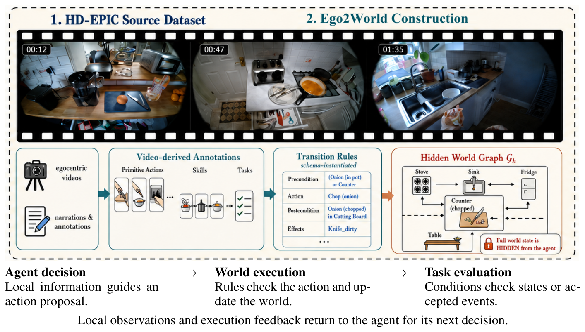
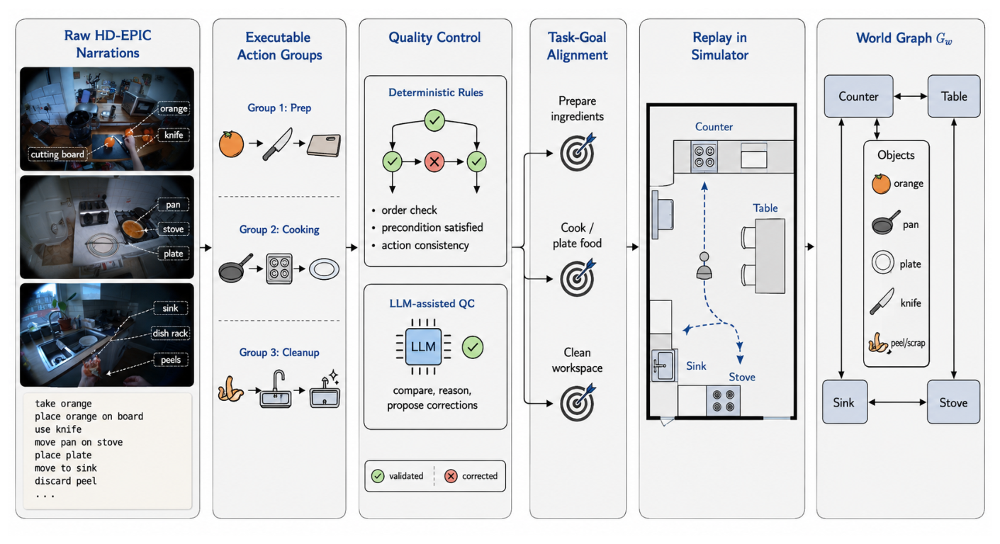
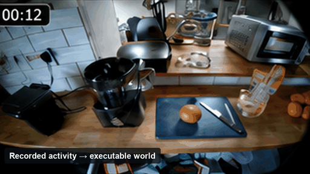
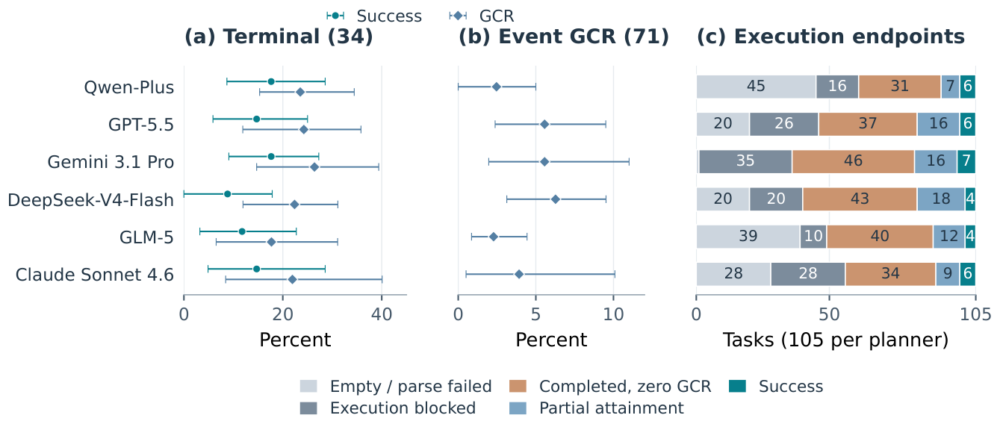
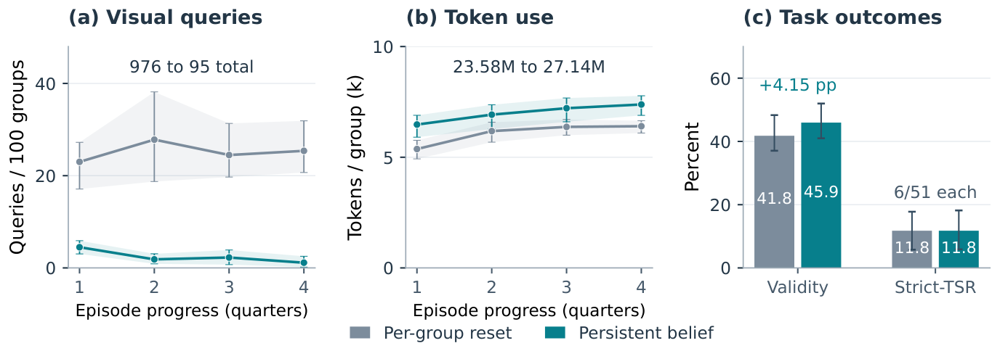
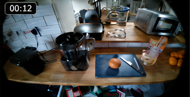
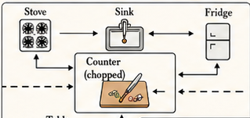

Ego2World: Compiling Egocentric Cooking Videos into Executable Worlds for Belief-State Planning
Ego2World compiles annotated cooking videos into executable environments for evaluating planning under partial observation.
Abstract
Egocentric videos capture how people carry out everyday activities, yet testing an agent requires evaluating the consequences of actions it chooses itself. We introduce Ego2World, a benchmark that turns annotated cooking activities from HD-EPIC into executable planning environments under partial observation. Its compiler links source steps and objects to symbolic action rules, persistent world states, and explicit task conditions, so researchers can execute an agent's proposed actions and check their outcomes. World state and agent belief are maintained separately, enabling controlled studies of planning and information reuse across continuing tasks. Across six frontier planners on 105 tasks, Operational-TSR provides a strict end-to-end completion baseline, while condition-level attainment (Goal Completion Ratio, GCR) and execution diagnostics (Action Validity and Completed-Run Rate) provide the primary discriminative comparison. In a paired Qwen-Plus study on 51 terminal-state tasks, retaining persistent belief across action groups improves action validity by +4.15 percentage points and reduces visual-query attempts by 90.27% (from 976 to 95), while increasing processed tokens (+3.56M) with no detected completion gain. Ego2World connects recorded human activity to the development and evaluation of interactive embodied agents.

The Ego2World Compilation Pipeline
Figure. Overview of the Ego2World annotation-to-environment compilation pipeline. Starting from 41 hours of unscripted HD-EPIC cooking recordings across 9 kitchens and 69 recipes, we parse temporal narration manifests and object references into ordered source steps. A manually curated ontology normalizes more than 300 source verb classes into 155 executable action types operating on typed object instances, locations, containment relations, and symbolic attributes. Temporally local steps are grouped into executable action groups with preserved source-step provenance, validated through deterministic precondition/consistency rules and localized LLM-assisted quality control, and replayed through the symbolic executor to produce persistent typed world graphs Gtw = (Vt, Et, At) and frozen task contracts Cτ.

World–Belief Separation & Partial Observation
Unlike static video QA benchmarks where an agent's answer has no effect on future frames, Ego2World executes every concrete primitive proposal at against the hidden world Gtw:
The full world state remains hidden from the agent. The agent maintains its own partial belief store Gtb (estimated object locations, known container states, and evidence sources) and can actively issue visual queries for region ℓ, receiving a historical anchor frame paired with a rendered symbolic diff otℓ = (Ianchorℓ, Render[Diff(G0ℓ, Gtℓ)]).

From Binary Endpoints to Capability Profiles
Evaluating long-horizon embodied plans solely by binary task completion collapses partially successful trajectories into the same zero score as parse failures or early blocks. Across 630 planner–task records (6 planners × 105 tasks), 78 completed runs satisfy some but not all required task conditions.
Ego2World pairs the strict conjunctive baseline (Operational-TSR and Strict-TSR) with task-normalized Goal Completion Ratio (GCR), Action Validity, and Completed-Run Rate. This multi-axis profile reveals distinct model strengths: Gemini 3.1 Pro leads GCR (12.31%) and completed runs (69/105), GPT-5.5 leads action validity (59.34%), and DeepSeek-V4-Flash leads event-contract GCR (6.27%).

Benefits and Costs of Persistent Belief
Because world evolution and belief retention are decoupled, we can isolate the exact causal impact of cross-group memory across 51 terminal-state tasks (22 episodes, 3,878 action groups per condition):
• Higher Execution Reliability: Retaining belief across groups increases task-macro action validity from 41.79% to 45.94% (+4.15 pp, 95% CI [+0.11, +7.78]).
• 90.27% Reduction in Visual Queries: Reusing remembered object locations slashes VLM visual-query attempts from 976 down to 95 across all four episode quarters.
• Context & Stale-Belief Trade-off: Persistence increases token consumption from 23.58M to 27.14M (+3.56M) while attaining the same 6/51 terminal successes (11.76%), exposing how coarse or outdated belief entries can block later steps.

Interactive Compiled-Task & Belief Trace Inspector
Select a real compiled task from Ego2World below to trace how source HD-EPIC video evidence is compiled into symbolic transition rules and world graphs (left panel), and inspect how agent belief and contract verification behave during execution (right panel):
Source Video Evidence & Compiled Rules

Hidden World Graph Gtw & Belief Execution Outcome

Experimental results
Protocol-Aligned Evaluation of Six Planners (105 Tasks)
| Planner | Completed Runs | Operational-TSR (%) [95% CI] | Terminal Strict-TSR (%) (n = 34) | Terminal GCR (%) (n = 34) | Event GCR (%) (n = 71) | Overall GCR (%) [95% CI] | Action Validity (%) [95% CI] |
|---|---|---|---|---|---|---|---|
| Qwen-Plus | 44 / 105 (41.9%) | 5.71 [2.78, 9.20] | 17.65 | 23.53 | 2.46 | 9.29 [5.90, 13.21] | 57.44 [48.66, 67.86] |
| GPT-5.5 | 59 / 105 (56.2%) | 5.71 [2.50, 9.89] | 14.71 | 24.25 | 5.56 | 11.61 [7.13, 16.22] | 59.34 [55.08, 63.21] |
| Gemini 3.1 Pro | 69 / 105 (65.7%) | 6.67 [2.91, 11.76] | 17.65 | 26.40 | 5.56 | 12.31 [6.30, 20.50] | 54.44 [47.10, 62.40] |
| DeepSeek-V4-Flash | 65 / 105 (61.9%) | 3.81 [0.00, 7.29] | 8.82 | 22.37 | 6.27 | 11.48 [6.90, 16.15] | 52.77 [46.52, 61.82] |
| GLM-5 | 56 / 105 (53.3%) | 3.81 [1.02, 7.50] | 11.76 | 17.70 | 2.28 | 7.27 [3.38, 12.48] | 50.72 [46.90, 55.90] |
| Claude Sonnet 4.6 | 49 / 105 (46.7%) | 5.71 [1.74, 11.70] | 14.71 | 21.94 | 3.92 | 9.75 [4.05, 18.48] | 56.91 [49.29, 66.79] |
Paired Belief Retention Study (Strict-51)
| Metric (51 Tasks, 3,878 Groups) | Persistent Belief | Per-Group Reset | Difference | 95% Paired CI |
|---|---|---|---|---|
| Strict-TSR (%) | 11.76% (6/51) | 11.76% (6/51) | +0.00 pp | [-6.38, +6.25] pp |
| Action Validity (%) | 45.94% | 41.79% | +4.15 pp | [+0.11, +7.78] pp |
| VLM Visual Queries | 95 | 976 | -881 (-90.27%) | [-1,106, -651] |
| Group-Accounted Tokens | 27.14 M | 23.58 M | +3.56 M | [+1.82, +5.45] M |
Frozen-Contract & Evaluator Audits
| Verification Check | Scope | Passed |
|---|---|---|
| Reference record satisfies contract | 105 tasks | 105 / 105 |
| Task-initial state correctly fails | 105 tasks | 105 / 105 |
| Predicate-level negative suites | 317 suites | 317 / 317 |
| Partial & wrong-binding negatives | 12 tasks each | 12/12; 12/12 |
| Invalid action immutability | 12 tasks | 12 / 12 |
| Legal independent order swap | 10 eligible | 10 / 10 |
Authors & citation
1Xi'an Jiaotong University 2Nankai University 3National University of Singapore 4I2R, A*STAR
@article{cheng2026ego2world,
title = {Ego2World: Compiling Egocentric Cooking Videos into Executable Worlds for Belief-State Planning},
author = {Qinchuan Cheng and Zhantao Gong and Pengzhan Sun and Angela Yao and Shijie Li},
journal = {arXiv preprint arXiv:2610.02715},
year = {2026}
}